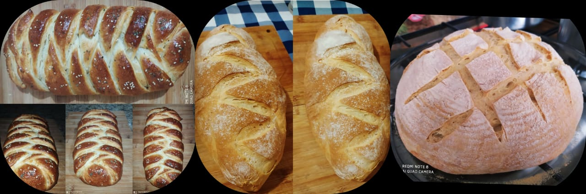

Nossos Pães Artesanais são feitos com muito amor, cuidado e aquela pitadinha que da o segredo dos sabores incriveis. Não utilizamos conservantes, agrotóxicos, melhoradores ou outras químicas!
Feitos com fermentação natural, uma casca crocante, um miolo macio e sabor sem igual! De digestão leve e facilitada: devido à fermentação lenta por até 24 horas, não causa inchaços e desconfortos gástricos.
Encomendas as quartas - feiras. Entregas as sextas das 08:00 - 16:00.
